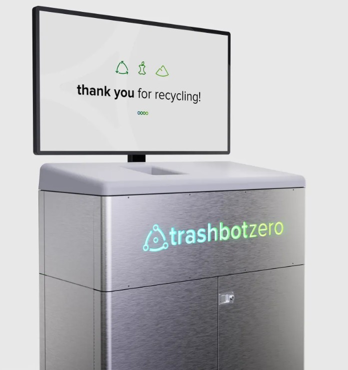

Overview
This image shows the CleanRobotics TrashBot, a product I supported through fabrication and assembly, contributing to the build of 14 total units. I utilized rapid prototyping to test and implement design improvements that enhanced reliability over the initial iteration. Additionally, I worked on a UX-centered redesign for the TrashBot, a project I found especially rewarding. I conducted market research, developed concept sketches, and iterated through multiple design directions. A key focus of this work was exploring gamification strategies to increase user engagement, reinforce educational content, and create a more intuitive, rewarding, and impactful experience.
Image source: TechCrunch
← Back to Home